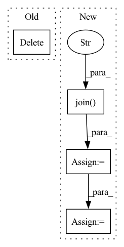

Pattern ID :18168

Before Change
self.start_epoch = chkpt["epoch"] + 1
self.best_mAP = chkpt["best_mAP"]
del chkpt
def __load_resume_weights(self):
After Change
def __load_best_weights(self):
best_weight = os.path.join(log_dir,"checkpoints", "best.pt")
last_weight = os.path.join(log_dir,"checkpoints", "last.pt")
shutil.copy2(best_weight,
best_weight.replace("best.pt","best_before_fine_tune.pt"))
last_chkpt = torch.load(last_weight, map_location=self.device)
best_chkpt = torch.load(best_weight, map_location=self.device)
self.yolov4.load_state_dict(best_chkpt)
self.start_epoch = last_chkpt["epoch"] + 1
In pattern: SUPERPATTERN
Frequency: 3
Non-data size: 4
Instances
Fragment ID: 59581912
Project Name: jingtianyilong/yolov4-pytorch
Commit Name: 9205889f12f82c8789044c657158bf974407d3ea
Time: 2020-11-30
Author: zijie.guo@daimler.com
File Name: train.py
M Class Name: Trainer
N Class Name: Trainer
M Method Name: __load_best_weights(1)
N Method Name: __load_best_weights(1)
M Parent Class: object
N Parent Class: object
M File Name: train.py
N File Name: train.py
M Start Line: 89
M End Line: 94
N Start Line: 88
N End Line: 96
'>
Before Change
env.close()
// Free memory
del model
if __name__ == "__main__":
represent_ex.observers.append(FileStorageObserver("rep_learning_runs"))
After Change
model.learn(data)
encoder_checkpoint = model.encoder_checkpoints_path
all_checkpoints = glob(os.path.join(encoder_checkpoint, "*"))
latest_checkpoint = max(all_checkpoints, key=os.path.getctime)
encoder_feature_extractor_kwargs = {"features_dim": representation_dim, "encoder_path": latest_checkpoint}
policy_kwargs = {"features_extractor_class": EncoderFeatureExtractor,
"features_extractor_kwargs": encoder_feature_extractor_kwargs }
'>
Fragment ID: 59581908
Project Name: humancompatibleai/eirli
Commit Name: 671643185bd4527637c941cb87f3a5757aeabf3f
Time: 2020-07-23
Author: codywild@berkeley.edu
File Name: run_rep_learner.py
M Class Name: AnonimousClass
N Class Name: AnonimousClass
M Method Name: run(10)
N Method Name: run(10)
M Parent Class:
N Parent Class:
M File Name: run_rep_learner.py
N File Name: run_rep_learner.py
M Start Line: 76
M End Line: 93
N Start Line: 77
N End Line: 85
'>
Before Change
env.close()
// Free memory
del model
if __name__ == "__main__":
represent_ex.observers.append(FileStorageObserver("rep_learning_runs"))
After Change
model.learn(data)
encoder_checkpoint = model.encoder_checkpoints_path
all_checkpoints = glob(os.path.join(encoder_checkpoint, "*"))
latest_checkpoint = max(all_checkpoints, key=os.path.getctime)
encoder_feature_extractor_kwargs = {"features_dim": representation_dim, "encoder_path": latest_checkpoint}
policy_kwargs = {"features_extractor_class": EncoderFeatureExtractor,
"features_extractor_kwargs": encoder_feature_extractor_kwargs }
'>
Fragment ID: 59581911
Project Name: humancompatibleai/eirli
Commit Name: a420017d1108a541747d380ef73b88de4393f51e
Time: 2020-07-23
Author: codywild@berkeley.edu
File Name: run_rep_learner.py
M Class Name: AnonimousClass
N Class Name: AnonimousClass
M Method Name: run(10)
N Method Name: run(10)
M Parent Class:
N Parent Class:
M File Name: run_rep_learner.py
N File Name: run_rep_learner.py
M Start Line: 76
M End Line: 93
N Start Line: 77
N End Line: 85